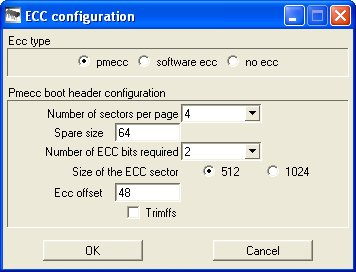

Enable and Configure PMECC (Programmable Multibit ECC) in AT91SAM SoC
Introduction
This page is mainly about how to enable and configure the PMECC in AT91SAM SoCs for different NAND flash devices.- The PMECC controller is a programmable binary BCH (Bose, Chaudhuri and Hocquenghem) encoder and decoder. It can be used to support both SLC and MLC NAND Flash devices.
- The PMECC module can correct 2, 4, 8, 12 or 24 bits of error per sector of data (512 Bytes or 1024 Bytes).
- According to different correctable ECC bits and sector size, the PMECC encoding data size is different.
- And the settings for different correctable ECC bits are incompatible.
- The following table shows the PMECC encoding data size for different configurations:
Correction Capability 512-Byte Sector 1024-Byte Sector 2 bits 4 Bytes 4 Bytes 4 bits 7 Bytes 7 Bytes 8 bits 13 Bytes 14 Bytes 12 bits 20 Bytes 21 Bytes 24 bits 39 Bytes 42 Bytes - In general, the PMECC encoding data are located at the end of the OOB area in NAND Flash.
- Here is an example for a NAND flash with the page size of 2KBytes, the OOB size of which is 64 Bytes. Configure the PMECC to 2-bit correction in 512-Byte sector.
OOB: ff ff ff ff ff ff ff ff ff ff ff ff ff ff ff ff ff ff ff ff ff ff ff ff ff ff ff ff ff ff ff ff ff ff ff ff ff ff ff ff ff ff ff ff ff ff ff ff bd f3 0f 02 90 98 99 00 2e bd 4b 02 59 19 3b 01 - Details for the above example:
- The 2KB page has 4 sectors (2048 / 512 = 4).
- Every sector needs 4-Byte PMECC encoding data (Check the above table for the size of ECC Bytes in a 512-Byte sector with 2-bit correction capability).
- So the PMECC encoding data size is 16 Bytes for every page (4 sector * 4 Bytes/Sector).
- The 16-Byte PMECC encoding data are located in the OOB area, from the 48th Byte to the end (64 - 16 = 48).
- Here is an example for a NAND flash with the page size of 2KBytes, the OOB size of which is 64 Bytes. Configure the PMECC to 2-bit correction in 512-Byte sector.
- The following table shows the PMECC encoding data size for different configurations:
PMECC prerequisites
As described in the introduction, it's important in your whole system to have the same ECC management. This is why we will detail below all the software components in a Linux based system.- In AT91SAM SoCs, the SAM9x5 series and SAM9N12 both support PMECC.
- The software versions that support PMECC:
- SAM-BA 2.11 or later versions
- AT91Bootstrap v3.5.0 or later versions
- U-Boot v2012.10 or later versions
- Kernel versions that support PMECC
- Kernel v2.6.39 in Linux4sam plus PMECC patches
- Kernel v3.7 with DTS modification
- Kernel v3.10, v3.18 in linux4sam
How to configure PMECC parameters
Find the minimum required ECC bits of NAND flash
- For ONFI compliant NAND flash:
- In the ONFI parameter structure, the 112th Byte, number of bits of ECC correctability, indicates the minimum required ECC bits in a 512-Byte sector.
- For ONFI 2.1 or later versions, if the number of bits of ECC correctabilty is 0xFF, then the actual correctable ECC bits and sector size should be found in the extended parameter page. The 14th Byte of ONFI parameter indicates the start of the extended parameter page.
- For non-ONFI compliant NAND flash, assume using 1-bit ECC.
Configurations in SAM-BA
The SAM-BA configuration is important as this tool is used to program the external NAND flash. During the NAND flash programming, the ECC needs to bet configured correctly to assure a good coherency of your system content. If you do not use SAM-BA to program your NAND flash, please update accordingly your NAND flash programmer. The configuration steps in SAM-BA:- Choose the NAND flash media tab in the SAM-BA GUI.
- Initialize the media by choosing
Enable NandFlashin the Scripts rolling menu and pressExecute. - Select
Enable OS PMECC parametersin the Scripts rolling menu and pressExecute. The default ECC configuration dialog will pop up:- 
- The detailed information for each item:
-
Ecc type: Select pmecc -
Number of sectors per page: Spare size / Sector size -
Spare size: OOB size in bytes -
Number of ECC bits required: Can be 2,4,8,12,24 bits. Set it according to the NAND flash minimum requirement. -
Size of the ECC sector: Can be 512,1024 in bytes. Set it according to the NAND flash minimum requirement. -
Ecc offset: Start position of PMECC encoding data in the OOB area, which is:oob size - (PMECC encode data size * sector number per page)
-
Trimffs: If select this option, then SAM-BA will NOT generate PMECC data for all 0xFF data page, since the generated PMECC data for all 0xFF data page are not 0xFF (Except SAMA5D4 chip). This option should be enabled when flash a rootfs in nand if the chip is not SAMA5D4.
-
Configurations in AT91Bootstrap
- The AT91Bootstrap v3.5.0 or later versions support PMECC and the PMECC parameter can be changed.
- The AT91Bootstrap v3.7.0 or later versions support ONFI ecc parameters auto detection. That means it will detect nandflash's ONFI and set the PMECC paramters automatically.
- Change the correctable PMECC bits & sector size
- For v3.5.0, modify the board head file, which is under AT91Bootstrap board directory.
#define PMECC_ERROR_CORR_BITS 2 /* Correctable ECC bits, can be 2,4,8,12,24 bits */ #define PMECC_SECTOR_SIZE 512 /* Sector size in bytes, can be 512 or 1024 */ - For v3.6.0, run the
make menuconfigto configure PMECC parametersmake sama5d3xeknf_uboot_defconfig # take SAMA5D3 as an example make menuconfigIn the popup menu, select as following to configure PMECC correctable bits & sector sizeMemory selection ---> NAND flash configuration ---> PMECC Configuration ---> PMECC Error Correction Bits (4-bit) ---> PMECC Sector Size (512-byte) ---> - For v3.7.0 or later, you need deselect
Auto-detect ONFI minimum error requirementoption before you set your own pmecc configuration. Then the operation is same as v3.6.0.Memory selection ---> NAND flash configuration ---> PMECC Configuration ---> Auto-detect ONFI minimum error requirement
- For v3.5.0, modify the board head file, which is under AT91Bootstrap board directory.
- Compile the AT91Bootstrap.
Configurations in U-Boot
- Only U-Boot v2012.10 and later versions support PMECC.
- Change the correctable PMECC bits & sector size in board configuration file, which is under directory
include/configs/./* PMECC & PMERRLOC */ #define CONFIG_ATMEL_NAND_HWECC 1 #define CONFIG_ATMEL_NAND_HW_PMECC 1 #define CONFIG_PMECC_CAP 2 /* Correctable ECC bits, can be 2,4,8,12,24 bits */ #define CONFIG_PMECC_SECTOR_SIZE 512 /* Sector size in bytes, can be 512 or 1024 */ #define CONFIG_PMECC_INDEX_TABLE_OFFSET 0x8000 /* Different sector size has different Index table. If the sector size is 1024, need to change it to 0x10000 */
- U-Boot v2013.07 and later versions support ONFI ecc parameters auto detection. To enable auto detection, you need remove the definitions of
CONFIG_PMECC_CAPandCONFIG_PMECC_SECTOR_SIZE. - Compile the U-Boot.
Configurations in Kernel
Kernel v2.6.39 in Linux4sam plus PMECC patches
- Get Linux 2.6.39 kernel.
# Get v2.6.39 kernel wget http://www.kernel.org/pub/linux/kernel/v2.6/linux-2.6.39.tar.bz2 tar xvjf linux-2.6.39.tar.bz2 cd linux-2.6.39 - Apply at91 patches
- For SAM9x5 series
- a) Get Linux 2.6.39 and apply the latest at91 patches for SAM9x5. Please refer to Linux4sam.
# Apply at91 patch for AT91SAM9x5 wget ftp://ftp.linux4sam.org/pub/linux/2.6.39-at91/2.6.39-at91-exp.2.tar.gz tar xvzf 2.6.39-at91-exp.2.tar.gz for p in 2.6.39-at91-exp.2/* ; do patch -p1 < $p ; done - b) Apply the patches that support different PMECC settings.
wget http://www.at91.com/linux4sam/pub/Linux4SAM/PmeccConfigure/9x5_pmecc_2639.tar.bz2 tar xvjf 9x5_pmecc_2639.tar.bz2 for p in 9x5_pmecc_2639/* ; do patch -p1 < $p ; done
- a) Get Linux 2.6.39 and apply the latest at91 patches for SAM9x5. Please refer to Linux4sam.
- For SAM9N12
- a) Get Linux 2.6.39 and apply the latest at91 patches for SAM9n12. You can also refer to Linux4sam.
# Apply at91 patch for AT91SAM9N12 wget ftp://ftp.linux4sam.org/pub/linux/2.6.39-at91/2.6.39-at91sam9n12-exp.tar.gz tar xvzf 2.6.39-at91sam9n12-exp.tar.gz patch -p1 < 2.6.39-at91-exp.patch - b) Apply the patches that support different PMECC settings.
wget http://www.at91.com/linux4sam/pub/Linux4SAM/PmeccConfigure/9n12_pmecc_2639.tar.bz2 tar xvjf 9n12_pmecc_2639.tar.bz2 for p in 9n12_pmecc_2639/* ; do patch -p1 < $p ; done
- a) Get Linux 2.6.39 and apply the latest at91 patches for SAM9n12. You can also refer to Linux4sam.
- For SAM9x5 series
- Change the PMECC settings to support different correctable ECC bits and sector size.
- Find the board file for the PMECC settings in
arch/arm/mach-at91/- 9X5:
board-sam9x5cm.c - 9N12:
board-sam9n12ek.c
- 9X5:
- Here lists the NAND flash setting which also has PMECC settings:
static struct atmel_nand_data __initdata cm_nand_data = { ... ... .ecc_mode = NAND_ECC_HW, // Use Hardware ECC not software ECC .has_pmecc = 1, // Using PMECC .pmecc_corr_cap = 2, // PMECC correctable ECC bits, can be 2,4,8,12,24 bits. Set it according to the NAND flash minimum requirement. .pmecc_sector_size = 512, // PMECC sector size, can be 512, 1024 Bytes. Set it according to the NAND flash minimum requirement. .pmecc_lookup_table_offset = 0x8000, ... ...
- Find the board file for the PMECC settings in
- Compile the kernel code.
v3.7 with DTS modification
- Apply the patch to add DT support for PMECC (Please skip this step and go to step2 if you are using 3.6.9-at91 kernel)
- For sam9x5
wget http://www.at91.com/linux4sam/pub/Linux4SAM/PmeccConfigure/0001-at91-9x5-add-DT-parameters-to-enable-PMECC.patch patch -p1 < 0001-at91-9x5-add-DT-parameters-to-enable-PMECC.patch - For sam9N12
wget http://www.at91.com/linux4sam/pub/Linux4SAM/PmeccConfigure/0002-at91-at91sam9n12-add-DT-parameters-to-enable-PMECC.patch patch -p1 < 0002-at91-at91sam9n12-add-DT-parameters-to-enable-PMECC.patch
- For sam9x5
- Change the PMECC settings
- Find the DTS file for the PMECC settings in
arch/arm/boot/dts/- 9X5:
at91sam9x5cm.dtsi - 9N12:
at91sam9n12ek.dts - SAMA5D3:
sama5d3cm.dtsi
- 9X5:
- Here lists the PMECC settings in DTS file:
nand-ecc-mode = "hw"; atmel,has-pmecc; /* Enable PMECC */ atmel,pmecc-cap = <2>; /* Correctable ECC bits, can be 2,4,8,12,24 bits */ atmel,pmecc-sector-size = <512>; /* Sector size in bytes, can be 512, 1024 */
- Find the DTS file for the PMECC settings in
- Compile the DTB file.
v3.10 and v3.18
- SAMA5D4EK and AT91-SAMA5D4 Xplained board will detect ONFI ecc paramters automatically. That means they won't set
atmel,pmecc-capandatmel,pmecc-sector-sizein the dt node. - If you want to change the PMECC settings, it is same as above v3.7 section.
FAQ
Q: How do I know the PMECC is enabled or not when booting?
In the kernel dmesg, if you enable PMECC, you should find the line as below:atmel_nand 40000000.nand: Initialize PMECC params, cap: 2, sector: 512In the U-Boot, to see the PMECC information you need enable the MTD debug in the board config file. For example, in SAMA5D3 need to add the following lines in
include/configs/sama5d3xek.h, then rebuild the U-Boot.bin.
#define CONFIG_MTD_DEBUG #define CONFIG_MTD_DEBUG_VERBOSE 1
Reference
- Website: ONFI specifications
 .
.
| WebFaqBaseForm | |
|---|---|
| Boards | Sama5d4Xplained, Sama5d4ek, Sama5d3Xplained, Sama5d3xek |
| Components | |
| Summary | About PMECC configuration |


| I | Attachment | Action | Size | Date | Who | Comment |
|---|---|---|---|---|---|---|
| |
0001-at91-9x5-add-DT-parameters-to-enable-PMECC.patch | manage | 1.5 K | 2013-02-01 - 03:26 | UnknownUser | |
| |
0002-at91-at91sam9n12-add-DT-parameters-to-enable-PMECC.patch | manage | 1.3 K | 2013-02-01 - 03:27 | UnknownUser | |
| |
9n12_pmecc_2639.tar.bz2 | manage | 16.3 K | 2013-02-01 - 03:27 | UnknownUser | |
| |
9x5_pmecc_2639.tar.bz2 | manage | 15.6 K | 2013-02-01 - 03:28 | UnknownUser | |
| |
SAM-BA_ecc_parameters.jpg | manage | 21.8 K | 2013-02-01 - 03:29 | UnknownUser |
r6 - 27 Aug 2015 - 02:59:05 - JoshWu

{kind=link}
{kind=link}
Copyright © by the contributing authors. All material on this collaboration platform is the property of the contributing authors.
Linux® is the registered trademark of Linus Torvalds in the U.S. and other countries.
Microchip® and others, are registered trademarks or trademarks of Microchip Technology Inc. and its subsidiaries. 
Arm® and others are registered trademarks or trademarks of Arm Limited (or its affiliates). Other terms and product names may be trademarks of others.
Ideas, requests, contributions ? Connect to LinksToCommunities page.